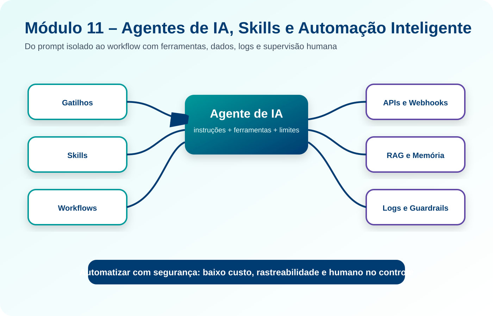
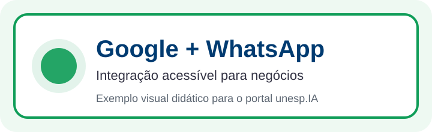

Agentes de IA, Skills e Automação Inteligente
Ferramentas relacionadas neste módulo

Apresentação
O avanço da Inteligência Artificial ampliou o interesse por soluções capazes de executar tarefas, acionar ferramentas, integrar sistemas e apoiar decisões em fluxos de trabalho reais. Nesse contexto, conceitos como agentes de IA, skills, tools, workflows, automações, webhooks, APIs, memória, logs, guardrails e supervisão humana tornam-se fundamentais para compreender como a IA pode sair de uma conversa isolada e passar a atuar em processos organizados.
O Módulo 11 – Agentes de IA, Skills e Automação Inteligente aprofunda os temas introduzidos no Módulo 6, com foco na criação, modelagem e avaliação de automações inteligentes aplicadas a negócios, educação, gestão pública, pesquisa, atendimento, produtividade e processos administrativos.
A proposta não é formar especialistas em programação avançada, mas capacitar os participantes a projetar soluções com clareza, escolher ferramentas adequadas, compreender custos, mapear riscos, testar fluxos e manter o ser humano no controle das decisões importantes.
1. Organização do Módulo
Carga horária total
20 horas.
Público recomendado
Participantes que já concluíram módulos introdutórios de IA ou que possuem interesse em automação, agentes inteligentes, atendimento automatizado, integração entre ferramentas, workflows, produtividade, soluções digitais, inovação, gestão de processos e desenvolvimento de protótipos com IA.
Pré-requisitos recomendados
- noções básicas de Inteligência Artificial e prompt;
- familiaridade com ferramentas digitais como formulários, planilhas, e-mail e aplicativos de mensagens;
- compreensão inicial sobre dados, privacidade e uso responsável da IA;
- interesse em organizar processos antes de automatizá-los.
Objetivo geral
Capacitar os participantes para compreender, modelar, prototipar e avaliar agentes de IA, skills e automações inteligentes, integrando ferramentas digitais, regras de negócio, modelos de linguagem, APIs, fontes de dados, supervisão humana e práticas de segurança, governança e controle de custos.
Competências desenvolvidas
Ao final do módulo, espera-se que o participante seja capaz de:
- diferenciar automação, workflow, skill, tool, chatbot, agente de IA e RPA;
- identificar quando uma tarefa deve ser resolvida por regra, por workflow, por IA pontual ou por agente;
- modelar skills com objetivo, gatilho, entradas, ações, saídas, validações, logs e riscos;
- selecionar exemplos de skills por modalidade de negócio e adaptar para empresas, unidades ou grupos multiempresa;
- desenhar workflows com etapas, condições, loops, tratamento de erro e aprovação humana;
- comparar ferramentas como n8n, Make, Zapier, Power Automate, Copilot Studio, Botpress, Gemini, Google Workspace e Apps Script;
- compreender o papel de APIs, webhooks, credenciais, autenticação e conectores;
- usar LLMs em pontos específicos do fluxo para classificar, resumir, extrair campos ou gerar respostas;
- compreender conceitos de RAG, memória, contexto, tools, handoffs e orquestração;
- estimar custos associados a tokens, execuções, tarefas, créditos, chamadas de API e infraestrutura;
- aplicar cuidados com LGPD, segurança, permissões, logs, auditoria e dados sensíveis;
- projetar guardrails, fallback, revisão humana e limites de autonomia;
- construir e apresentar um protótipo de agente, skill ou automação inteligente para um problema real.
2. Estrutura das Unidades
| Unidade | Tema | Carga horária |
|---|---|---|
| Unidade 11.1 | Fundamentos de agentes, skills e workflows inteligentes | 3h |
| Unidade 11.2 | Modelagem de skills: gatilhos, entradas, saídas e validações | 3h |
| Unidade 11.3 | Automação low-code e no-code com ferramentas visuais | 4h |
| Unidade 11.4 | Agentes com LLMs, APIs, RAG, memória e orquestração | 4h |
| Unidade 11.5 | Custos, segurança, LGPD, guardrails, logs e governança | 3h |
| Unidade 11.6 | Laboratório final: protótipo de agente ou skill | 3h |
| Total | 20h |
A sequência pedagógica segue a lógica:
conceitos → modelagem de skills → automação visual → agentes com IA → governança e custos → protótipo aplicado
Como grande parte da população já utiliza conta Google no cotidiano, este módulo também valoriza exemplos com Google Forms, Google Sheets, Gmail, Google Calendar, Gemini e Apps Script. Essas ferramentas costumam ser mais familiares para cidadãos, pequenos negócios, escolas, associações e serviços locais, tornando a entrada na automação mais acessível.
Unidade 11.1 – Fundamentos de agentes, skills e workflows inteligentes
Carga horária
3 horas
Objetivo da unidade
Apresentar os fundamentos de automação, workflows, skills, tools, chatbots, agentes de IA e RPA, diferenciando soluções baseadas em regras, soluções com IA pontual e soluções agentivas com uso de ferramentas.
Situação de abertura
Uma equipe recebe mensagens de clientes por WhatsApp, e-mail e formulário. Algumas mensagens são dúvidas simples, outras exigem consulta a pedidos, outras precisam virar ticket e algumas devem ser encaminhadas a uma pessoa responsável.
Antes de pensar em “colocar IA em tudo”, a equipe precisa entender quais etapas são repetitivas, quais exigem decisão humana, quais dados são necessários e qual ferramenta deve ser acionada em cada situação.
Conceitos principais
| Conceito | Descrição | Exemplo |
|---|---|---|
| Automação | Execução de tarefas repetitivas por regras ou sistemas. | Receber formulário e enviar confirmação por e-mail. |
| Workflow | Fluxo organizado de etapas, decisões, entradas e saídas. | Pedido recebido → validar dados → registrar → responder. |
| Skill | Capacidade específica que o sistema pode executar. | Consultar status de pedido ou criar ticket. |
| Tool | Ferramenta acionada por uma automação ou agente. | API, planilha, e-mail, agenda, banco de dados ou CRM. |
| Chatbot | Interface conversacional para responder ou conduzir atendimento. | Bot que responde dúvidas frequentes. |
| Agente de IA | Sistema com instruções, ferramentas e limites para agir em nome do usuário. | Agente que recebe uma solicitação, consulta dados e propõe encaminhamento. |
| RPA | Robô que interage com telas quando não há API disponível. | Copiar dados de sistema legado para planilha. |
Quando não usar agente de IA
Nem todo problema precisa de agente. Se a tarefa é previsível, repetitiva e possui regra clara, um workflow tradicional tende a ser mais barato, rápido e confiável. Agentes são mais indicados quando há linguagem natural, ambiguidade, múltiplas ferramentas, etapas variáveis, necessidade de interpretar contexto ou encaminhar casos diferentes.
Atividade guiada
- Escolher uma rotina real: atendimento, cadastro, triagem, relatório, agenda ou comunicação.
- Separar o que é regra simples, o que exige IA e o que exige decisão humana.
- Classificar a solução desejada como automação, chatbot, skill, agente ou RPA.
- Representar o fluxo em cinco etapas.
Exemplos completos com fluxo por ferramenta
Nos exemplos abaixo, o fluxo também pode ser chamado de workflow, processo automatizado, diagrama de etapas ou encadeamento da skill. A ideia é mostrar, de forma concreta, o que acontece do início ao fim da automação.

Exemplo completo 1 – n8n
Cenário: triagem de leads para um grupo com várias empresas e unidades.
| Nó / etapa | Função | Entrada e saída | Observação didática |
|---|---|---|---|
| Webhook | Recebe lead do site, formulário ou WhatsApp. | Entrada: nome, cidade, interesse, telefone. Saída: JSON do lead. | É o ponto de entrada do fluxo. |
| Set / Function | Normaliza campos e adiciona grupo_id, empresa_id e unidade_id. | Entrada: JSON bruto. Saída: dados padronizados. | Essencial para grupos multiempresa. |
| IF | Verifica se faltam campos obrigatórios. | Saída A: pedir dados; Saída B: continuar fluxo. | Mostra controle por regra, sem IA. |
| LLM / AI Agent | Classifica a intenção quando o texto vem livre. | Saída: categoria, prioridade e próxima ação. | Usar JSON estruturado para reduzir erro. |
| HTTP Request / CRM | Registra lead no sistema correto. | Saída: ID do lead e responsável. | Integração com API. |
| WhatsApp / e-mail | Confirma recebimento ao cliente e avisa equipe local. | Saída: mensagem enviada. | Pode ter aprovação humana em casos VIP. |
| Banco/Sheet | Armazena log, custo estimado e status. | Saída: trilha de auditoria. | Base para governança. |
Skill principal: roteador de leads multiempresa. Skills auxiliares: validar cadastro, classificar intenção, notificar unidade, registrar log.

Exemplo completo 2 – Make
Cenário: processamento de pedido e comunicação com cliente em um e-commerce.
| Módulo / etapa | Função | Entrada e saída | Observação didática |
|---|---|---|---|
| Trigger da loja | Detecta novo pedido ou mudança de status. | Entrada: ID do pedido. Saída: início do cenário. | Marca o começo do cenário no Make. |
| Search / API | Busca detalhes do pedido. | Saída: cliente, itens, valor, status, transportadora. | Integra com sistema de vendas. |
| Router | Separa caminhos para pago, pendente, cancelado ou enviado. | Saída: ramo específico do fluxo. | Mostra ramificações de negócio. |
| Text / Template | Monta mensagem padrão ou personalizada. | Saída: texto para cliente. | LLM pode ser opcional aqui. |
| WhatsApp / Gmail | Envia atualização ao cliente. | Saída: confirmação do envio. | Importante controlar frequência de mensagens. |
| Google Sheets / ERP | Atualiza controle operacional. | Saída: linha atualizada ou evento registrado. | Serve de apoio à equipe. |
| Error handler | Registra falha e cria alerta. | Saída: ticket ou notificação interna. | Garante resiliência do fluxo. |
Skill principal: atualizar status do pedido. Skills auxiliares: consultar pedido, validar pagamento, enviar comunicação e registrar exceções.
Comparação rápida dos fluxos
| Aspecto | n8n | Make |
|---|---|---|
| Melhor cenário didático | Integração flexível com APIs, dados e lógica mais aberta. | Automação visual e rápida para processos de negócio. |
| Ponto forte no exemplo | Roteamento multiempresa com mais controle sobre dados. | Cenário de comunicação operacional com fluxo claro. |
| Onde usar IA | Classificação de intenção, resumo, extração e agente. | Personalização de mensagens, classificação e sumarização. |
| Onde evitar IA | Validação de campos, regras fixas e auditoria. | Status fixos, regras comerciais e checagens determinísticas. |
| Ponto de aprovação humana | Leads estratégicos, conflito entre unidades, dados incompletos. | Cancelamento, reembolso, crise de atendimento e exceções. |
Exemplos completos com ferramentas do Google
Os exemplos a seguir foram incluídos porque muitas pessoas já usam produtos Google no dia a dia. Isso reduz a barreira de entrada e facilita a compreensão de automações úteis para negócios, cursos, associações e serviços.

Exemplo completo 3 – Google Forms + Sheets + Gmail + Calendar
Cenário: captação de pedidos de orçamento ou agendamento de atendimento.
| Ferramenta / etapa | Função no fluxo | Exemplo de uso |
|---|---|---|
| Google Forms | Coleta os dados do cliente. | Nome, telefone, serviço desejado, data preferida e observações. |
| Google Sheets | Armazena e organiza as respostas. | Cada linha vira um novo pedido, lead ou agendamento. |
| Validação por regra | Verifica campos obrigatórios e disponibilidade. | Se faltar telefone, marcar pendência; se houver horário, seguir. |
| Gmail | Envia confirmação automática. | “Recebemos sua solicitação e entraremos em contato.” |
| Google Calendar | Cria evento, bloco de horário ou lembrete. | Agenda atendimento da equipe ou lembrete de retorno. |
| Planilha de controle | Atualiza status do atendimento. | Novo, em análise, confirmado, concluído. |
Skill principal: receber solicitação e confirmar atendimento. Ideal para: clínicas, escritórios, professores, pequenas empresas, salões, oficinas e associações.

Exemplo completo 4 – Gemini + Gmail + Sheets para triagem e resposta
Cenário: organizar e responder e-mails de contato ou pedidos recebidos por formulário.
| Etapa | Função | Controle importante |
|---|---|---|
| Captura | Receber mensagem do cliente ou cidadão. | Evitar coletar dados sensíveis desnecessários. |
| Registro | Salvar conteúdo e metadados em Google Sheets. | Registrar data, canal, remetente e status. |
| Gemini | Classificar assunto, prioridade e tipo de demanda. | Solicitar saída estruturada, como categoria e urgência. |
| Rascunho | Preparar uma resposta inicial no Gmail. | Não enviar automaticamente casos sensíveis. |
| Humano no loop | Revisar antes de enviar. | Obrigatório em reclamações, finanças e exceções. |
| Atualização | Marcar a linha como respondida, pendente ou escalonada. | Permite acompanhar produtividade e SLA. |
Skill principal: triagem inteligente de e-mails e mensagens. Ideal para: secretarias, coordenações, atendimento educacional, pequenos negócios e grupos de serviço.
Exemplo aplicado – Google Sheets + WhatsApp

Exemplo completo 5 – Google Sheets + WhatsApp Business
Cenário: acompanhamento de clientes e envio de mensagens operacionais.
| Uso | Exemplo | Cuidado |
|---|---|---|
| Lembretes | Agendamento, pagamento, entrega, devolução de documento. | Respeitar autorização do contato. |
| Campanhas leves | Confirmação de evento ou curso. | Evitar spam e excesso de disparos. |
| Suporte | Enviar instrução ou link útil. | Evitar dados sensíveis em texto aberto. |
Esse fluxo pode ser feito com Apps Script, plataformas intermediárias ou ferramentas de automação conectadas à planilha.
Mini exemplos complementares

Power Automate
Cenário: pedido de aprovação de campanha interna.
Ótimo para organizações que já vivem no ecossistema Microsoft 365.

Google Apps Script
Cenário: formulário de orçamento que alimenta Sheets e dispara Gmail automaticamente.
Ótimo para laboratórios educacionais e pequenas automações de baixo custo.
Mapa inicial de oportunidade de automação inteligente.
Um agente de IA deve ser usado porque é moderno ou porque realmente melhora um processo?
Unidade 11.2 – Modelagem de skills: gatilhos, entradas, saídas e validações
Carga horária
3 horas
Objetivo da unidade
Ensinar a modelar skills de forma estruturada, definindo objetivo, gatilho, entradas, ações, ferramentas, saídas, validações, erros, logs, permissões, riscos e pontos de supervisão humana.
Situação de abertura
Um pequeno negócio deseja criar uma skill para responder clientes sobre pedidos. A ideia parece simples, mas a skill precisa saber quais dados pedir, quando consultar a planilha, o que fazer se o pedido não existir, quando escalar para humano e quais informações não podem ser expostas.
Modelo de especificação de skill
| Elemento | Pergunta orientadora | Exemplo |
|---|---|---|
| Nome | Como a skill será identificada? | Consultar pedido |
| Objetivo | Qual problema resolve? | Informar status de entrega. |
| Gatilho | Quando deve iniciar? | Mensagem com intenção de rastreamento. |
| Entradas | Quais dados são necessários? | Número do pedido e telefone. |
| Ações | O que será executado? | Validar, consultar, formatar resposta. |
| Ferramentas | Quais sistemas serão usados? | Google Sheets, API de pedidos, WhatsApp. |
| Saída | O que a skill entrega? | Status, prazo e orientação. |
| Erros | O que fazer quando falhar? | Pedir confirmação ou abrir ticket. |
| Logs | O que será registrado? | Data, solicitação, status, resposta e falhas. |
| Permissões | Quem pode executar? | Cliente autenticado ou atendente. |
| Supervisão | Quando precisa de humano? | Cancelamento, reclamação ou dado divergente. |
Padrões de modelagem
- uma skill deve ter objetivo único e bem definido;
- as entradas devem ser mínimas e necessárias;
- a saída deve ser padronizada e verificável;
- ações críticas devem exigir confirmação humana;
- erros devem ter mensagens amigáveis e caminhos alternativos;
- logs devem permitir rastrear o que ocorreu;
- dados sensíveis devem ser protegidos desde a modelagem.
Atividade guiada
- Escolher uma skill para um cenário real.
- Preencher a especificação completa da skill.
- Definir entradas obrigatórias e opcionais.
- Indicar ferramentas e dados acessados.
- Descrever erros possíveis e respostas alternativas.
- Definir quando haverá aprovação humana.
Ficha completa de especificação de uma skill.
Uma skill mal especificada automatiza o problema ou organiza a solução?
Banco de Skills e modalidades de negócio
Para que a modelagem de skills não fique abstrata, o Módulo 11 passa a utilizar um Banco de Skills organizado por modalidades de empresas e negócios. A proposta é permitir que cada participante escolha um cenário próximo da sua realidade e adapte a skill para uma ferramenta concreta, como n8n, Make, Zapier, Power Automate, Google Apps Script, ManyChat, Botpress, Copilot Studio ou frameworks avançados.
| Modalidade | Exemplos de skills | Ferramentas sugeridas | Cuidados |
|---|---|---|---|
| Comércio varejista | Consultar estoque, gerar orçamento, pós-venda, alerta de estoque baixo. | n8n, Google Sheets, WhatsApp Business, Make. | Não prometer produto sem consultar estoque atualizado. |
| E-commerce e delivery | Status de pedido, triagem de reclamação, carrinho abandonado, relatório de vendas. | Zapier, n8n, Make, APIs de pedidos. | Autenticar cliente antes de expor informações de pedido. |
| Alimentação e restaurantes | Reserva, cardápio do dia, encomendas, restrições alimentares. | ManyChat, WhatsApp Business, Sheets, Calendar. | Informações sobre alergênicos devem vir de fonte validada. |
| Serviços profissionais | Qualificar lead, agendar triagem, registrar briefing, gerar proposta preliminar. | Forms, n8n, Docs, CRM, ChatGPT/Gemini. | Propostas e promessas de resultado exigem revisão humana. |
| Educação e cursos | Inscrição, FAQ do curso, presença, certificado preliminar, tutor de laboratório. | Forms, Sheets, Apps Script, Botpress, Copilot Studio. | Proteger dados dos participantes e evitar decisões automáticas punitivas. |
| Grupos multiempresa | Roteador de leads, atendimento por unidade, catálogo de skills, consolidador de indicadores. | n8n, CRM, BI, banco de dados, Copilot Studio. | Separar dados por empresa, unidade, canal e permissões. |
Consulte o Banco de Skills para acessar modelos organizados por comércio, serviços, alimentação, saúde, educação, imobiliário, indústria, logística, turismo e grupos com várias empresas.
Integração de grupos com várias empresas
Quando há várias empresas, marcas, unidades ou franquias, a skill não deve ser pensada apenas como um fluxo isolado. Ela precisa funcionar com parâmetros corporativos e locais. Isso significa registrar qual grupo, empresa, unidade, canal, usuário e versão da skill estão envolvidos em cada execução.
| Elemento | Papel na integração | Exemplo |
|---|---|---|
| grupo_id | Identifica o grupo empresarial. | Grupo com várias marcas ou franquias. |
| empresa_id | Separa regras, dados e indicadores por empresa. | Empresa A, Empresa B, Empresa C. |
| unidade_id | Permite atendimento local. | Loja Centro, Loja Prudente, Unidade Online. |
| canal_id | Identifica origem da interação. | WhatsApp, formulário, Instagram, e-mail. |
| skill_id | Registra qual skill foi executada. | Roteador de leads v1.2. |
| perfil/permissão | Define quem pode executar ou aprovar ações. | Atendente, gerente local, gestor corporativo. |
Esse cuidado evita que o agente misture informações de empresas diferentes, aplique políticas erradas, encaminhe clientes para a unidade incorreta ou gere indicadores inconsistentes.
Unidade 11.3 – Automação low-code e no-code com ferramentas visuais
Carga horária
4 horas
Objetivo da unidade
Apresentar ferramentas visuais de automação e demonstrar como criar workflows com gatilhos, ações, condições, integrações, webhooks e tratamento de erros, comparando ferramentas adequadas para diferentes níveis de complexidade.
Comparação das principais ferramentas
As ferramentas não devem ser escolhidas apenas por popularidade. No contexto do UNESP.IA, a escolha deve considerar objetivo didático, custo, facilidade de uso, integração com ferramentas já conhecidas, possibilidade de auditoria e nível de autonomia permitido à IA.
| Ferramenta | Vantagens | Desvantagens | Melhor uso no UNESP.IA |
|---|---|---|---|
| n8n | Visual; flexível; bom para automação e IA; permite uso com APIs, webhooks, nós de decisão, HTTP Request, Code node e agentes; pode ser usado em nuvem ou infraestrutura própria. | Pode exigir mais configuração; para iniciantes absolutos pode parecer técnico; exige cuidado com credenciais, logs e manutenção. | Melhor opção para mostrar automação + IA + agentes com maior controle técnico. |
| Make | Interface visual amigável; bom para cenários de automação; facilita visualizar módulos, rotas, filtros e integrações. | Pode gerar custo conforme volume; algumas integrações exigem plano pago; menor liberdade técnica que ferramentas mais abertas. | Boa alternativa para demonstração visual de fluxos de negócio. |
| Zapier | Muito fácil; integra com muitos aplicativos; excelente para automações rápidas entre ferramentas populares. | Pode ficar caro em escala; menor controle técnico; lógica avançada pode depender de planos e recursos específicos. | Bom para mostrar automação simples para leigos e protótipos rápidos. |
| Power Automate | Forte para quem usa Microsoft 365; integra Outlook, Teams, Excel, SharePoint e Power Platform; pode apoiar fluxos com Copilot. | Pode depender de licenças institucionais; melhor quando a organização já usa o ecossistema Microsoft. | Bom se a turma usar Outlook, Teams, Excel e SharePoint. |
| Google Apps Script | Gratuito ou de baixo custo; ótimo para Forms, Sheets, Gmail e Calendar; adequado ao ambiente educacional e a protótipos simples. | Exige noções de JavaScript; possui limites de execução e permissões. | Excelente para laboratório intermediário com planilhas e formulários. |
| ManyChat | Muito bom para atendimento, Instagram, WhatsApp e Messenger; facilita criar fluxos de conversa e captação de interessados. | Focado em marketing e conversas; pode ter limitações e custos por plano, canal ou volume. | Atendimento e relacionamento com cliente. |
| Botpress | Bom para chatbot/agente com base de conhecimento, workflows, nós conversacionais e integrações. | Mais específico para agente conversacional; pode exigir configuração de base de conhecimento e testes de intenção. | Demonstração de chatbot inteligente com FAQ e fluxo de atendimento. |
| Copilot Studio | Forte para organizações Microsoft; permite criar agentes graficamente ou por linguagem natural; integra dados, fluxos e canais corporativos. | Licenciamento, créditos e dependência do ecossistema Microsoft/Azure podem ser barreiras. | Módulo avançado, turma corporativa ou contexto institucional Microsoft. |
| OpenAI Agents SDK / LangGraph / CrewAI | Mais poderosos e flexíveis para agentes reais; permitem programação, tools, memória, orquestração, handoff, tracing, multiagentes e maior personalização. | Exigem programação, APIs, segurança, observabilidade e controle de custo por tokens. | Módulo avançado, projetos técnicos e protótipos robustos. |
Matriz rápida de decisão
| Situação | Ferramenta mais indicada | Por quê? |
|---|---|---|
| Quero só mostrar uma automação simples sem programação. | Zapier ou Make | Baixa barreira de entrada e criação rápida de fluxos. |
| Quero ensinar automação com mais controle, API, webhook e IA. | n8n | Permite combinar nós visuais, chamadas HTTP, lógica, IA e agentes. |
| A turma usa Gmail, Forms e Sheets. | Google Apps Script ou n8n com Google Sheets | Permite criar automações educacionais de baixo custo. |
| A turma usa Microsoft 365 institucionalmente. | Power Automate ou Copilot Studio | Integra com Outlook, Teams, Excel, SharePoint e Power Platform. |
| O foco é atendimento por WhatsApp/Instagram. | ManyChat ou WhatsApp Business | Mais adequado para conversas, respostas frequentes e captação de clientes. |
| O foco é chatbot com base de conhecimento. | Botpress ou Copilot Studio | Permite organizar intenções, respostas, conhecimento e encaminhamento. |
| O foco é construir agentes reais com código. | OpenAI Agents SDK, LangGraph ou CrewAI | Permite controle fino, ferramentas customizadas, memória, testes e observabilidade. |
Exemplos práticos por ferramenta
Exemplo 1 – n8n: triagem de formulário com IA e registro em planilha
Cenário: uma pessoa preenche um formulário pedindo ajuda sobre IA para o seu negócio. O fluxo registra a solicitação, classifica o tipo de demanda e envia resposta automática.
| Etapa | Nó ou recurso | Função |
|---|---|---|
| 1 | Webhook ou Form Trigger | Receber nome, e-mail, mensagem e tipo de negócio. |
| 2 | Set/Edit Fields | Padronizar campos recebidos. |
| 3 | AI Agent ou LLM | Classificar a solicitação em atendimento, marketing, dados, automação ou outro. |
| 4 | IF ou Switch | Encaminhar por categoria. |
| 5 | Google Sheets | Registrar solicitação, categoria, prioridade e data. |
| 6 | Gmail ou Send Email | Enviar confirmação ao solicitante. |
| 7 | Error Trigger | Registrar falhas e avisar responsável. |
Classifique a mensagem do usuário em uma das categorias:
atendimento, marketing, dados, automação, financeiro ou outro.
Responda somente em JSON:
{
"categoria": "...",
"prioridade": "baixa|media|alta",
"justificativa": "...",
"dados_faltantes": []
}Exemplo 2 – Make: lead recebido → planilha → notificação
Cenário: um pequeno negócio quer registrar interessados vindos de um formulário e avisar o responsável no e-mail ou WhatsApp.
- Criar um cenário no Make.
- Usar Google Forms ou Webhook como gatilho.
- Adicionar módulo do Google Sheets para inserir nova linha.
- Adicionar filtro: se o interesse for “orçamento”, marcar prioridade alta.
- Adicionar módulo de e-mail ou notificação.
- Testar com três formulários diferentes.
Uso didático: excelente para ensinar a lógica de módulos, rotas, filtros e operações.
Exemplo 3 – Zapier: automação simples para leigos
Cenário: quando uma nova resposta entra no Google Forms, criar uma tarefa em Trello/Notion e enviar e-mail de confirmação.
- Escolher o gatilho: “New Form Response”.
- Escolher a ação: criar tarefa no Trello, Notion ou Google Tasks.
- Adicionar ação de e-mail com mensagem curta.
- Testar o Zap.
- Publicar e acompanhar tarefas consumidas.
Uso didático: bom para demonstrar rapidamente o conceito “se acontecer X, faça Y”.
Exemplo 4 – Power Automate: triagem de e-mails no Microsoft 365
Cenário: quando chega um e-mail com assunto contendo “solicitação”, o fluxo registra o item em Excel/SharePoint e envia mensagem no Teams.
- Usar Outlook como gatilho.
- Aplicar condição no assunto ou corpo do e-mail.
- Registrar a solicitação em Excel ou SharePoint.
- Enviar mensagem no Teams para a equipe.
- Adicionar aprovação humana antes de responder ao solicitante.
Uso didático: bom para turmas ligadas a instituições que já usam Microsoft 365.
Exemplo 5 – Google Apps Script: confirmação automática de inscrição
Cenário: uma planilha recebe inscrições de um formulário e o Apps Script envia confirmação personalizada.
function enviarConfirmacao() {
const planilha = SpreadsheetApp.getActiveSpreadsheet().getActiveSheet();
const ultimaLinha = planilha.getLastRow();
const nome = planilha.getRange(ultimaLinha, 2).getValue();
const email = planilha.getRange(ultimaLinha, 3).getValue();
GmailApp.sendEmail(
email,
"Confirmação de inscrição",
"Olá, " + nome + ". Sua inscrição foi recebida com sucesso."
);
}Uso didático: excelente para mostrar que nem toda automação precisa de LLM; algumas podem ser resolvidas com script simples e barato.
Exemplo 6 – ManyChat: atendimento inicial por WhatsApp ou Instagram
Cenário: um negócio quer responder dúvidas frequentes, coletar nome, interesse e encaminhar para atendimento humano quando necessário.
- Criar mensagem inicial de boas-vindas.
- Adicionar botões: preços, horários, endereço, falar com atendente.
- Coletar nome e interesse do usuário.
- Enviar resposta automática conforme opção escolhida.
- Encaminhar para humano se houver reclamação, pedido sensível ou dúvida não prevista.
Uso didático: bom para discutir limites entre atendimento automatizado, marketing conversacional e atendimento humano.
Exemplo 7 – Botpress: chatbot com base de conhecimento
Cenário: criar um assistente para responder perguntas sobre um curso, projeto ou serviço usando uma base de perguntas frequentes.
- Criar o bot.
- Adicionar base de conhecimento com FAQ, páginas ou documentos.
- Definir fluxo de boas-vindas.
- Criar fallback para quando não souber responder.
- Adicionar handoff para contato humano.
- Testar perguntas esperadas e perguntas fora do escopo.
Exemplo 8 – Copilot Studio: agente institucional no ecossistema Microsoft
Cenário: criar um agente para orientar servidores ou colaboradores sobre procedimentos internos, usando documentos institucionais e ações conectadas ao Microsoft 365.
- Descrever o agente em linguagem natural.
- Adicionar fontes de conhecimento autorizadas.
- Definir instruções de comportamento e limites.
- Adicionar ação com Power Automate, quando necessário.
- Publicar em canal de uso, como Teams ou site interno.
- Acompanhar uso, respostas e necessidade de correções.
Exemplo 9 – OpenAI Agents SDK, LangGraph ou CrewAI: agente programado com tools
Cenário: um agente recebe uma solicitação, consulta uma API, valida o resultado, gera uma resposta e registra log.
Tool: consultar_status_pedido Entrada: - numero_pedido Saída: - status - data_prevista - observacao Regras: - se numero_pedido estiver ausente, pedir novamente; - se status for cancelado, encaminhar para humano; - registrar log de toda consulta.
Uso didático: indicado para participantes com perfil técnico ou para projetos avançados, pois envolve código, APIs, segurança, custo por tokens, testes e observabilidade.
Componentes de um workflow
- Trigger: evento que inicia o fluxo, como formulário recebido, horário agendado, mensagem ou webhook.
- Ação: etapa executada, como salvar dados, enviar e-mail, chamar API ou gerar resumo.
- Condição: regra que cria ramificações, como “se pedido pago, enviar confirmação”.
- Loop: repetição controlada de ações.
- Erro e retry: tratamento de falhas e novas tentativas.
- Log: registro da execução para auditoria e melhoria.
- Aprovação humana: ponto em que a automação aguarda confirmação antes de responder, alterar dados ou executar ação sensível.
Laboratório prático
Construir e comparar dois fluxos para o mesmo problema: um sem IA e outro com IA pontual.
- Escolher um problema: inscrição, atendimento, pedido, orçamento, triagem ou relatório.
- Modelar a versão simples: formulário → planilha → e-mail.
- Modelar a versão com IA: formulário → classificação → planilha → resposta personalizada.
- Comparar custo, risco, complexidade e benefício.
- Definir onde deve existir aprovação humana.
- Registrar o fluxo em diagrama e apresentar para a turma.
Workflow visual de automação com comparação entre versão sem IA e versão com IA, incluindo gatilho, ações, condição, tratamento de erro, custos e supervisão humana.
A melhor ferramenta é a mais poderosa ou a mais adequada ao problema, ao orçamento, aos dados e ao nível técnico da equipe?
Em muitos contextos, a melhor escolha inicial pode ser uma automação simples baseada em ferramentas já conhecidas, como Google Forms, Sheets, Gmail e Calendar, antes de migrar para plataformas mais avançadas.
Unidade 11.4 – Agentes com LLMs, APIs, RAG, memória e orquestração
Carga horária
4 horas
Objetivo da unidade
Compreender como agentes de IA utilizam modelos de linguagem, instruções, ferramentas, APIs, memória, recuperação de informações, handoffs, saídas estruturadas e orquestração para executar tarefas com múltiplas etapas.
Arquitetura conceitual de um agente
| Componente | Função | Exemplo |
|---|---|---|
| Instruções | Definem papel, objetivos, limites e estilo de resposta. | “Você é um agente de triagem de solicitações.” |
| Modelo de linguagem | Interpreta texto, decide próximos passos e gera respostas. | GPT, Claude, Gemini ou modelo local. |
| Tools | Permitem executar ações externas. | Consultar planilha, API, e-mail ou calendário. |
| Memória | Armazena contexto de sessão ou informações persistentes. | Histórico da conversa ou preferências do usuário. |
| RAG | Recupera informações de documentos ou bases antes de responder. | Buscar em FAQ, normas, manuais ou base de conhecimento. |
| Orquestração | Coordena etapas, ferramentas, agentes e decisões. | Triagem → consulta → validação → resposta → log. |
| Handoff | Transfere a tarefa para outro agente ou pessoa. | Atendimento humano ou especialista financeiro. |
| Saída estruturada | Organiza resultado em formato previsível. | JSON com categoria, prioridade e justificativa. |
Padrões de agentes
- Agente de triagem: classifica solicitações e define prioridade.
- Agente de atendimento: responde dúvidas com apoio de base de conhecimento.
- Agente operacional: consulta sistemas e prepara respostas.
- Agente analítico: resume dados, gera indicadores e aponta anomalias.
- Agente orquestrador: coordena outros agentes ou skills.
- Agente com humano no loop: prepara recomendações, mas aguarda aprovação.
Exemplos de arquiteturas de agentes
Arquitetura 1 – Agente de FAQ com RAG
Objetivo: responder perguntas com base em documentos confiáveis, sem inventar informações.
| Etapa | Descrição | Controle necessário |
|---|---|---|
| Entrada | Usuário faz uma pergunta. | Filtrar dados pessoais e linguagem ofensiva. |
| Recuperação | Buscar trechos relevantes em documentos, FAQ ou base institucional. | Usar apenas fontes autorizadas. |
| Geração | IA responde com base nos trechos encontrados. | Exigir resposta curta e indicar quando não souber. |
| Fallback | Se não encontrar base suficiente, encaminhar para humano. | Evitar resposta inventada. |
| Log | Registrar pergunta, categoria e resultado. | Proteger dados pessoais. |
Arquitetura 2 – Agente operacional com API
Objetivo: consultar sistemas externos e preparar resposta, mas sem executar ações críticas sem aprovação.
Mensagem do usuário → identificar intenção → validar campos obrigatórios → chamar API ou planilha → interpretar retorno → gerar resposta → se houver risco, pedir aprovação humana → registrar log
Arquitetura 3 – Multiagente com orquestrador
Objetivo: dividir uma tarefa complexa entre agentes especializados.
| Agente | Responsabilidade | Exemplo |
|---|---|---|
| Orquestrador | Recebe a demanda e decide quem deve atuar. | Encaminha para atendimento, financeiro ou suporte. |
| Agente de atendimento | Entende a mensagem e consulta FAQ. | Responde dúvidas frequentes. |
| Agente operacional | Consulta sistemas ou planilhas. | Verifica status de pedido. |
| Agente de qualidade | Revisa resposta antes do envio. | Confere tom, segurança e dados pessoais. |
| Humano | Aprova casos sensíveis. | Cancelamento, reclamação, compra ou alteração de cadastro. |
Saída estruturada e JSON
Em automações, muitas vezes a IA não deve responder em texto livre. Ela deve devolver uma estrutura previsível para que o workflow consiga decidir o próximo passo.
{
"intencao": "consulta_pedido",
"prioridade": "media",
"dados_faltantes": ["numero_pedido"],
"proxima_acao": "pedir_numero_pedido",
"precisa_humano": false
}Exemplo de instrução de sistema para agente
Você é um agente de triagem de solicitações de um pequeno negócio. Objetivo: - identificar a intenção do usuário; - coletar dados obrigatórios; - decidir se a solicitação pode ser respondida automaticamente; - encaminhar para humano quando houver risco. Regras: - não invente informação; - não confirme pagamento, cancelamento ou alteração cadastral; - não exponha dados pessoais; - responda em JSON; - se faltar dado obrigatório, indique dados_faltantes; - se houver reclamação, marque precisa_humano = true.
Tools: especificação e boas práticas
Uma tool deve ter nome claro, finalidade delimitada, parâmetros obrigatórios, retorno previsível, tratamento de erro e regras de permissão. Tools muito amplas aumentam risco; tools pequenas e bem descritas facilitam teste e auditoria.
| Tool | Entrada | Saída | Risco | Controle |
|---|---|---|---|---|
| consultar_pedido | numero_pedido | status, data_prevista | Baixo | Somente leitura. |
| enviar_email | destinatario, assunto, corpo | confirmacao_envio | Médio | Revisão humana para mensagens sensíveis. |
| cancelar_pedido | numero_pedido, motivo | status_cancelamento | Alto | Exigir confirmação humana. |
| atualizar_cadastro | cliente_id, campos | registro_atualizado | Alto | Permissão, autenticação e log. |
Comparação: frameworks e plataformas para agentes
| Opção | Perfil | Vantagens | Cuidados | Exemplo didático |
|---|---|---|---|---|
| n8n AI Agent | Low-code com agentes e tools em workflows. | Visual, integra automação, APIs, planilhas e modelos de IA. | Organizar credenciais, limites e fallback. | Agente que classifica solicitações e aciona planilha/e-mail. |
| Botpress | Chatbot/agente conversacional. | Bom para FAQ, base de conhecimento, fluxos e handoff. | Testar intenções, fontes e respostas fora do escopo. | Assistente de atendimento sobre o curso UNESP.IA. |
| Copilot Studio | Agentes corporativos no Microsoft 365. | Integra dados, canais e Power Platform. | Licenças, créditos, Azure e governança institucional. | Agente interno para procedimentos administrativos. |
| OpenAI Agents SDK | Desenvolvimento programado de agentes. | Permite tools, handoffs, tracing, sessões e guardrails. | Exige código, testes, segurança e controle de custo. | Agente Python que consulta uma API e retorna JSON. |
| LangGraph | Orquestração de agentes como grafos/estados. | Bom para fluxos complexos, controle de estado e ciclos. | Exige desenho arquitetural e programação. | Fluxo triagem → consulta → revisão → resposta. |
| CrewAI | Times de agentes com papéis especializados. | Didático para explicar colaboração entre agentes. | Risco de muitas chamadas ao LLM e aumento de custo. | Equipe de agentes: pesquisador, analista e revisor. |
Laboratório prático
- Definir um agente de triagem.
- Criar instruções do agente.
- Listar tools disponíveis.
- Classificar cada tool como leitura, escrita ou ação sensível.
- Definir formato de saída em JSON.
- Desenhar quando usar RAG, memória ou handoff.
- Testar três mensagens diferentes: simples, incompleta e sensível.
- Definir logs mínimos e critério de aprovação humana.
Especificação de agente com instruções, tools, saída estruturada, fluxo de orquestração, controles de segurança e exemplos de teste.
Quanto mais autonomia o agente recebe, maior também deve ser o controle sobre suas ações?
Unidade 11.5 – Custos, segurança, LGPD, guardrails, logs e governança
Carga horária
3 horas
Objetivo da unidade
Discutir os principais custos, riscos e mecanismos de controle em automações e agentes de IA, incluindo tokens, execuções, tarefas, créditos, APIs, credenciais, privacidade, LGPD, logs, auditoria, guardrails e revisão humana.
Custos principais
| Fonte de custo | Como aparece | Como controlar |
|---|---|---|
| Tokens de LLM | Entrada longa, saída longa ou muitas chamadas. | Respostas curtas, cache, contexto mínimo e IA só quando necessário. |
| Execuções de workflow | Cada fluxo executado consome recursos ou créditos. | Filtrar gatilhos, evitar loops e registrar uso. |
| Tarefas/operações | Cada etapa cobrada pela plataforma. | Reduzir etapas, combinar operações e revisar volume. |
| APIs externas | Consultas pagas a serviços, mensagens ou dados. | Definir limites, cache e monitoramento. |
| Infraestrutura | Servidor, banco, fila, storage e logs. | Dimensionamento, retenção de logs e alertas. |
| Manutenção | APIs mudam, credenciais expiram e fluxos quebram. | Documentação, testes e versionamento. |
Segurança e LGPD
- coletar apenas os dados necessários para a finalidade definida;
- não enviar dados sensíveis para ferramentas sem base legal e autorização adequada;
- usar credenciais seguras e nunca expor chaves de API em telas, prints ou arquivos públicos;
- definir permissões por perfil de usuário;
- registrar logs sem armazenar conteúdo sensível desnecessário;
- prever exclusão, correção e rastreabilidade de dados pessoais;
- informar o usuário quando houver uso de IA em atendimento ou tomada de decisão.
Guardrails e controles
Guardrails são limites e verificações que reduzem riscos. Podem estar no prompt, no workflow, no código, na plataforma ou na revisão humana.
| Controle | Objetivo | Exemplo |
|---|---|---|
| Validação de entrada | Impedir dados inválidos ou incompletos. | Validar e-mail e número de pedido. |
| Filtro de escopo | Evitar respostas fora do tema. | Responder apenas dúvidas sobre o serviço. |
| Aprovação humana | Controlar ações sensíveis. | Exigir confirmação antes de cancelar pedido. |
| Limite de custo | Evitar gasto inesperado. | Limitar chamadas por usuário ou por dia. |
| Logs e auditoria | Rastrear decisões e falhas. | Registrar tool acionada, horário e resultado. |
| Fallback | Encaminhar quando o agente não souber resolver. | Abrir ticket para atendimento humano. |
Atividade guiada
- Escolher uma automação ou agente já modelado.
- Identificar dados pessoais e dados sensíveis envolvidos.
- Mapear custos por tokens, execuções, tarefas e APIs.
- Definir guardrails de entrada, saída e ação.
- Definir logs e indicadores de acompanhamento.
- Indicar quais ações exigem aprovação humana.
Matriz de custos, riscos e controles para uma automação ou agente de IA.
Automatizar sem log e sem limite de ação é inovação ou risco operacional?
Unidade 11.6 – Laboratório final: protótipo de agente ou skill
Carga horária
3 horas
Objetivo da unidade
Integrar os conhecimentos do módulo por meio da criação de uma proposta ou protótipo de agente, skill ou automação inteligente para um problema real, incluindo modelagem, ferramentas, fluxo, custos, riscos, governança e apresentação final.
Desafio final
Cada participante ou grupo deverá escolher um problema real e propor uma solução de automação inteligente. O produto pode ser um protótipo visual, um workflow executável, um agente conceitual, um chatbot com base de conhecimento ou uma skill especificada em detalhes.
Opções de projeto final
- agente de atendimento para dúvidas frequentes;
- skill de consulta de pedido, agenda, inscrição ou solicitação;
- workflow de triagem de mensagens;
- automação de formulário, planilha e e-mail;
- agente de resumo de reuniões ou documentos;
- assistente de organização de demandas acadêmicas;
- agente para gestão pública, educação, pesquisa ou pequeno negócio;
- fluxo com humano no loop para decisões sensíveis.
Roteiro do projeto final
- Descrever o problema real.
- Identificar público, usuários e contexto de uso.
- Definir se a solução será automação, skill, chatbot ou agente.
- Mapear dados de entrada, ferramentas e fontes de informação.
- Desenhar o workflow com etapas, condições e erros.
- Definir onde a IA será usada e onde não será usada.
- Estimar custos e riscos.
- Definir guardrails, logs e aprovação humana.
- Preparar demonstração ou protótipo visual.
- Apresentar a solução em até sete minutos.
Modelo de entrega
| Item | Descrição esperada |
|---|---|
| Título da solução | Nome curto e objetivo. |
| Problema | Descrição da dor ou oportunidade. |
| Tipo de solução | Automação, skill, chatbot, agente ou combinação. |
| Usuários | Quem utiliza e quem é impactado. |
| Fluxo | Etapas, gatilhos, decisões e saídas. |
| Ferramentas | Plataformas, APIs, planilhas, e-mails, formulários ou canais. |
| Uso de IA | Onde a IA entra e por quê. |
| Custos | Tokens, execuções, créditos, mensagens e manutenção. |
| Riscos | Privacidade, erro, viés, falha operacional ou custo inesperado. |
| Controles | Guardrails, logs, aprovação humana, limites e fallback. |
Ferramentas
ChatGPT, Gemini, Claude, Copilot, n8n, Make, Zapier, Power Automate, Google Forms, Google Sheets, Gmail, Apps Script, WhatsApp Business, ManyChat, Botpress, Copilot Studio, APIs, webhooks, Miro, FigJam, Canva ou ferramentas disponíveis.
Protótipo, mapa ou especificação completa de um agente, skill ou automação inteligente aplicada a um problema real.
A solução proposta aumenta autonomia, segurança e eficiência ou apenas transfere complexidade para uma ferramenta?
Avaliação do Módulo 11
A avaliação será formativa, prática e participativa, considerando o processo de modelagem, a coerência técnica, a viabilidade e os cuidados éticos.
Critérios
- compreensão dos conceitos de automação, skill, tool, workflow, chatbot e agente;
- clareza na identificação do problema e do público-alvo;
- adequação da solução ao problema proposto;
- modelagem correta de gatilhos, entradas, ações, saídas e validações;
- uso adequado de ferramentas e integrações;
- definição clara de onde a IA será usada e onde regras simples são suficientes;
- atenção a custos, tokens, execuções, créditos, APIs e manutenção;
- previsão de erros, fallback e tratamento de exceções;
- uso de logs, auditoria e critérios de rastreabilidade;
- cuidados com LGPD, privacidade, segurança e permissões;
- definição de guardrails e aprovação humana para ações sensíveis;
- qualidade do protótipo, mapa ou especificação final;
- clareza da apresentação e capacidade de justificar escolhas.
Produto final do módulo
Ao final do Módulo 11, o participante terá produzido:
Protótipo ou especificação de uma solução baseada em agente de IA, skill ou automação inteligente.
Esse produto poderá ser:
- workflow visual em ferramenta de automação;
- ficha completa de uma skill;
- mapa de agente com tools, memória, RAG e handoffs;
- chatbot conceitual com base de conhecimento;
- proposta de automação com formulário, planilha e e-mail;
- matriz de custos, riscos e controles;
- protótipo de atendimento com humano no loop;
- apresentação final da solução.
Resultado esperado
Ao final do Módulo 11, o participante deverá ser capaz de projetar uma solução de automação inteligente de forma estruturada, diferenciando quando usar regras, workflows, LLMs ou agentes, escolhendo ferramentas adequadas, considerando custos, riscos, segurança, privacidade, logs, governança e necessidade de supervisão humana.
O participante também estará preparado para aprofundar estudos em desenvolvimento de agentes, APIs, integrações, ciência de dados, engenharia de prompts, automação organizacional e soluções aplicadas em negócios, educação, gestão pública, pesquisa e atendimento.
Materiais relacionados
Banco de Skills
Acesse modelos de skills por modalidade de negócio, incluindo grupos com várias empresas.
Abrir banco